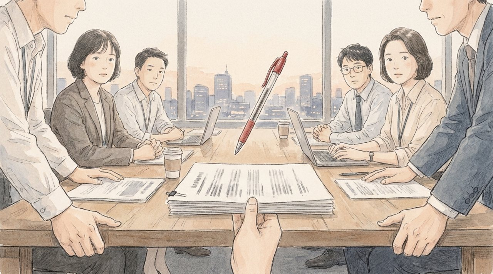
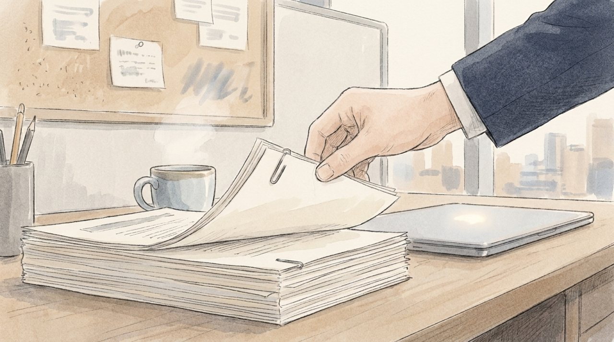
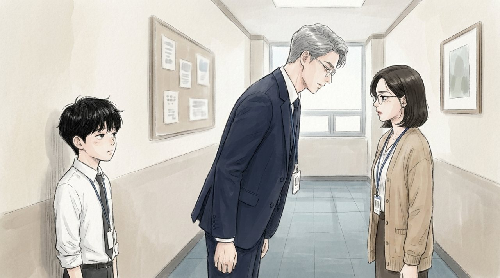

최윤아의 페이지에는 그래프가 두 개 있었다.
왼쪽은 위로 올라가는 선이었다. 청연의 온라인 매출. 코로나 1년 동안 꾸준히 올랐다. 오른쪽은 아래로 내려가는 선이었다. 백화점과 면세점, 오프라인 매출. 내려가는 속도가 훨씬 빨랐다.
두 선 사이에는 회색으로 칠한 면적이 있었다. 올라간 만큼보다 내려간 만큼이 더 컸다. 그 차이가 회색이었다.
그래프 아래에 한 줄이 적혀 있었다.
'온라인은 회사를 키우고 있지 않습니다. 줄어드는 속도를 늦추고 있을 뿐입니다.'
이우진은 그 문장을 세 번 읽었다. 토요일마다 새벽 5시 반에 나와 결제 단계를 줄이는 일. 그 모든 일이 결국 회색 면적을 조금 좁히는 것뿐이라는 뜻이었다.
"윤아 과장님, 이거 사장님 앞에서 보여 드리면..."
"뭐라고 하실까요?"
최윤아는 커피를 마시며 담담하게 말했다. 서른여덟. 여섯 살 딸을 키우는 엄마. 숫자에 가장 정확하고, 감으로 하는 회의에 가장 먼저 제동을 거는 사람.
"사장님은 숫자를 좋아하신다면서요. 이게 진짜 숫자예요. 그리고 연휘 쿠폰 22시간이 그 회색을 줄이는 방법을 보여 주고요. 같이 넣으면 이야기가 돼요."
금요일 밤 10시. 2주차 보고서가 완성되었다.
표지, 요약, 9단계 분석, 2주 실행안, 6개월 과제. 그리고 7페이지에 최윤아의 그래프, 8페이지에 연휘 22시간. 한지석이 결론 문장을 이번에는 한 번만 고쳤다. 지난주보다 나아진 게 있다면 그것이었다.
최윤아는 10시 반에 먼저 퇴근했다. 내일 아침 딸의 등원을 남편에게 맡기려면 오늘 밤에 도시락을 싸 둬야 한다고 했다.
"출력은 제가 할게요. 내일 5시 반에 봬요."
이우진이 말했다. 최윤아는 고맙다고, 미안하다고 했다. 이 회사 사람들은 요즘 미안하다는 말을 너무 자주 했다.
토요일 새벽 5시 20분. 이우진은 공유 폴더에서 최종본을 열었다. 열여섯 부를 출력하기 전 마지막 확인이었다.
1페이지, 2페이지, 그리고 6페이지 다음이 7페이지였다. 그런데 7페이지는 연휘 22시간이었다.
그는 스크롤을 다시 올렸다. 다시 내렸다. 최윤아의 회색 그래프가 없었다.
버전 기록을 열었다. 마지막 수정: 어젯밤 11시 40분. 수정한 사람: 권재혁.
출력 버튼 앞에서 이우진의 손가락이 멈췄다.
그는 한지석에게 전화를 걸었다. 신호가 두 번 가고, 잠에서 덜 깬 목소리가 들렸다. 한지석은 이미 집을 나서 택시 안에 있었다.
"파트장님, 윤아 과장님 페이지가 빠졌어요. 상무님이 어젯밤에 지우셨어요."
수화기 너머가 조용해졌다. 택시 라디오 소리만 작게 들렸다.
"...상무님이 뺐으면, 이유가 있겠지."
"윤아 과장님한테 말씀드려야 하지 않을까요?"
"지금 새벽 5시 반이야. 윤아는 서아 옆에서 자고 있어. 깨워서 뭐라고 할 건데? '당신 페이지 빠졌어요, 근데 이유는 몰라요?'"
이우진은 대답하지 못했다.
"출력해, 우진아. 이유는 회의 끝나고 상무님한테 직접 듣자. 그게 순서야."
순서. 이우진은 그 단어가 싫었다. 그런데 그 단어 말고는 지금 할 수 있는 게 없었다. 최윤아에게 전화를 할까. 새벽 5시 20분이었다. 그녀는 지금 딸 옆에서 자고 있을 것이었다.
그는 출력 버튼을 눌렀다. 열여섯 부. 7페이지가 없는 보고서였다. 아니, 7페이지는 있었다. 원래 8페이지였던 것이 7페이지가 되어 있었을 뿐이다. 보고서는 아무것도 빠지지 않은 것처럼 보였다.
7시 정각. 문혜경 사장이 들어왔다.
이번에는 앉았다. 지난주와 달랐다. 그리고 보고서를 덮으라고 하지 않았다. 대신 첫 장을 넘겼다.
권재혁이 일어섰다.
"지난주에 세 번으로 줄이겠다고 말씀드렸습니다. 제가 틀렸습니다."
회의실이 조용해졌다. 황인석 대표가 고개를 들었다.
"2주 안에 할 수 있는 건 다섯 번까지입니다. 나머지 두 단계는 회원 시스템과 결제 모듈을 바꿔야 해서 6개월이 걸립니다. 그 6개월짜리 계획도 3페이지에 넣었습니다."
문혜경은 3페이지를 펼쳤다. 그리고 한참 동안 그 페이지를 봤다. 빨간 볼펜을 집었지만 아무 줄도 긋지 않았다.

"틀렸다고 말하는 사람, 오랜만이네요."
그 한마디가 칭찬인지 아닌지 아무도 알 수 없었다. 문혜경은 다음 장으로 넘어갔다. 그리고 7페이지에서 멈췄다.
"연휘 쿠폰."
엄기태 상무의 어깨가 굳었다. 이우진은 문 옆에서 침을 삼켰다.
"이 얘기 들었어요. 백화점에서 항의가 왔다고."
"네, 사장님. 제가 이미 권 상무에게 분명히..."
"22시간 동안 처음 산 사람이 열에 일곱이라고요?"
문혜경은 엄기태의 말을 듣지 않았다. 그녀의 시선은 숫자에 있었다.
"엄 상무님. 연휘 고객 평균 나이, 지난주에 여쭤봤죠. 알아보셨어요?"
"...쉰여덟입니다."
"이 22시간 동안 산 사람들은요?"
엄기태는 대답하지 못했다. 권재혁이 대신 말했다.
"서른넷입니다."
회의실이 술렁였다. 스물네 살 차이. 연휘가 30년 동안 만나지 못한 고객들이 22시간 만에 찾아왔다는 뜻이었다.
"엄 상무님. 연휘 할인하라는 얘기 아닙니다."
문혜경이 말했다.
"서른네 살이 연휘를 할인 없이 살 방법을 가져오세요. 다음 달까지. 온라인 전용으로."
엄기태의 얼굴이 붉어졌다. 그는 고개를 숙였다. 그리고 고개를 숙인 채로, 권재혁 쪽을 아주 잠깐 쳐다봤다. 이우진은 그 눈빛을 봤다. 지난주 엘리베이터 앞에서 봤던 것보다 훨씬 차가웠다.
다음 순서는 해외사업팀이었다. 지난주 문혜경이 던진 질문, '동남아는 왜 안 되는가'에 대한 첫 보고였다.
해외사업팀장 진만석 상무가 보고서를 넘기기 시작했다. 12년 전 순댓국집에 '지나가다 들렀던' 바로 그 사람이었다. 그사이 그는 한 번도 자리를 옮기지 않았다. 1페이지 시장 개요. 2페이지 국가별 경제 지표. 3페이지 현지 유통 구조. 4페이지에 가서야 실적 그래프가 나왔고, 5페이지부터 원인 분석이 이어졌다.
'현지 유통 파트너의 영업력 부족.' '환율 변동에 따른 가격 경쟁력 약화.' '경쟁사의 공격적 저가 정책.' '본사 마케팅 지원 부족.'
문혜경이 볼펜을 내려놓았다.
"상무님, 결론이 몇 페이지에 있습니까?"
"11페이지입니다, 사장님."
"그럼 11페이지부터 보고하세요."
진만석 상무가 황급히 장을 넘겼다. 11페이지에는 '유통 파트너 교체 검토 및 마케팅 예산 증액 요청'이라고 적혀 있었다.
"5페이지 원인이 넷이네요. 유통 파트너, 환율, 경쟁사, 본사. 이 중에 상무님 부서가 한 일은 어디 있습니까?"
회의실이 얼어붙었다.
"거래선 탓, 환율 탓, 경쟁사 탓, 본사 탓. 이건 보고가 아닙니다. 해설이지."
문혜경은 보고서를 덮었다.
"다음 주에 다시 하세요. 첫 장에 결론. 우리가 뭘 잘못했는지. 뭘 바꿀 건지. 바꾸면 얼마가 좋아지는지. 언제까지. 그리고 회사가 도와줄 게 있으면 그걸 마지막에. 온라인팀 보고서처럼요."
권재혁은 표정 하나 바꾸지 않았다. 하지만 이우진은 봤다. 진만석 상무가 회의실을 나가며 권재혁 쪽을 쳐다보는 눈빛을. 칭찬은 때로 적을 하나 더 만들었다. 이 회사에서 '온라인팀처럼'이라는 말은, 다른 팀에게는 듣고 싶지 않은 말이었다.
회의는 7시 48분에 끝났다. 지난주보다 4분 빨랐다.
회의실을 나서던 황인석 대표가 엘리베이터 앞에서 엄기태를 불러 세웠다. 이우진은 출력본을 회수하며 그 대화를 들었다.
"엄 상무님, 다음 달 기획 잘 부탁해요. 사장님이 직접 말씀하신 거니까."
"네, 대표님."
"그리고 권 상무랑은 너무 각 세우지 마세요. 지금은 저 사람 숫자가 좋잖아요."
'지금은.' 이우진은 그 단어를 회의록에 적지 않았다. 적을 수도 없었다. 하지만 머릿속 회의록에는 굵은 글씨로 남았다. 한지석이 말한 두 번째 회의록이 바로 이런 것이었다.
8시 10분. 작은 회의실 문이 열리고 최윤아가 들어왔다. 그녀는 회의 중에 문 옆 보조석에 앉아 있었다. 출력본을 넘기면서 7페이지가 바뀐 걸 봤을 것이다. 그리고 회의 내내 아무 말도 하지 않았다.
"상무님."
권재혁이 고개를 들었다. 한지석과 백승원도 있었다. 이우진은 문 앞에 서 있었다.
"제 페이지, 왜 빼셨어요?"

"순서 때문에요."
"순서요?"
"그 페이지가 오늘 들어가면, 사장님은 오늘 이렇게 물으셨을 거예요. '그럼 온라인팀은 왜 있습니까.' 우리는 아직 그 질문에 대답할 숫자가 없어요. 다섯 번으로 줄인 결과가 다음 주에 나와요. 그 결과를 들고, 그다음에 최 과장 페이지를 보여 드려야 해요."
"숫자를 빼면, 사장님을 속이는 거잖아요."
"속이는 게 아니라 순서를 정하는 거예요."
"그 순서는 누가 정하는데요?"
권재혁은 대답하지 않았다. 최윤아의 목소리가 처음으로 떨렸다.
"상무님. 저 오늘 새벽 4시 반에 일어났어요. 우리 애는 아침에 일어났을 때 엄마가 없었고요. 어젯밤에 도시락 싸 놓고 나왔어요. 그 페이지 만들려고 이번 주에 세 번 밤을 샜어요. 그럼 저는 오늘 뭘 하러 나온 거예요?"
아무도 대답하지 못했다. 백승원이 무언가 말하려다 입을 다물었다. 이번에는 그도 덮을 수 없는 일이었다.
권재혁이 일어섰다.
"미안해요, 최 과장."
그는 최윤아에게 고개를 숙였다. 이우진은 상무가 과장에게 고개를 숙이는 모습을 처음 봤다.

"다음 달에 그 페이지, 최 과장 이름으로 올라갑니다. 약속할게요."
최윤아는 한참 서 있다가, 아무 말 없이 회의실을 나갔다.
그날 오후, 이우진은 탕비실 앞에서 최윤아의 가방이 반쯤 열려 있는 걸 봤다. 그 안에 접힌 종이 한 장이 보였다. 회색 면적이 칠해진 그래프였다. 그녀는 혼자서 한 부를 따로 출력해 두었던 것이다.
그 한 장이 다시 회의실 테이블 위에 놓이는 건, 다음 달이 아니었다.
생각보다 훨씬 나중의 일이었다.
(EP8 끝)